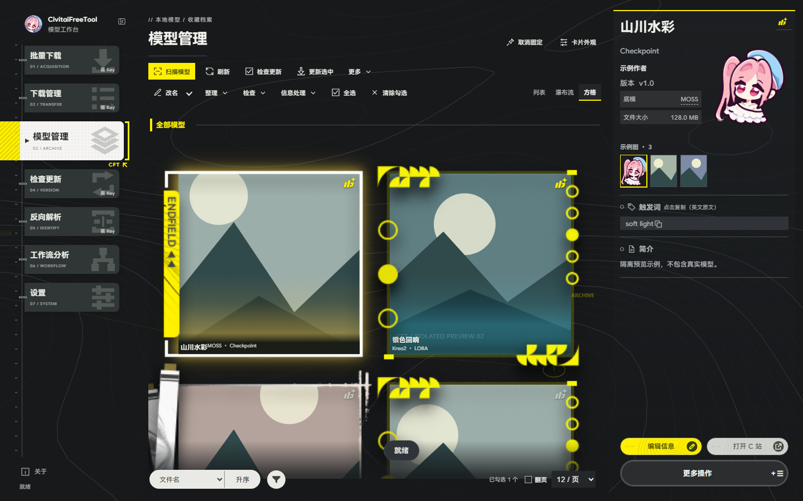
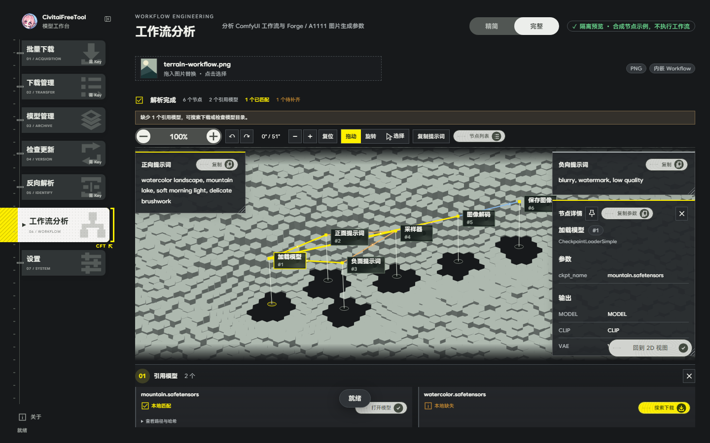

批量下载
粘贴链接，选择文件和落地目录，模型与附属信息一起处理。
YOUR MODELS / YOUR WORKBENCH
下载、归档、反向解析与工作流分析。
一个工作台，整理你的模型收藏。
免费使用 · Windows 便携版 · 终末地亮 / 暗主题

示例数据 / 不包含个人模型与账号01 / WORKSPACE
从收集链接到整理模型，从生成图片回看节点。
粘贴链接，选择文件和落地目录，模型与附属信息一起处理。
暂停、继续、重试与移除。完成后自动进入按日期、批次分组的历史。
瀑布流、方格、列表；收藏、筛选、封面、示例图和触发词放在一起。
比较同底模版本。单击选择，全选 / 反选当前筛选结果，支持跨页。
尝试匹配本地文件的来源信息，区分已匹配、进行中、失败与待处理。
读取图像元数据和 ComfyUI 节点，查看提示词、引用模型与缺失情况。
字体回退、卡片外观、快捷键、网络和性能独立配置，不修改系统字体。
02 / WORKFLOW ENGINEERING
支持的数据可以在 3D 建筑沙盘与 2D 节点图之间切换。提示词单独复制，节点详情可调整大小与固定，模型引用集中查看。
仅分析与查看，不执行工作流或生成图片。文件未包含、已剥离的元数据无法凭空恢复。

03 / PERFORMANCE
首次升级可以保留原设置；之后在「设置 → 性能」调整。
完整动画，高精度背景，不锁 60 帧。
保留动画，拖动窗口时暂缓，松手恢复。
保留动效，降低背景绘制负担。
保留静态外观，不停止下载或视频。
实际帧率受屏幕、设备与 WebView 影响，不保证达到上限。GPU 默认不禁用；软件渲染是排障选项。
04 / GET THE WORKBENCH
当前文档版本 3.0.8 · 2026-10-28
Windows 10 / 11，使用 WebView2。更新前正常退出旧版，替换 EXE，保留原配置与任务。
Linux / macOS 源码运行说明 ↗当前页发送，或勾选浏览器模型标签页批量提交。先启动 CFT；插件无需填写 API Key。
Chrome / Edge 解压后加载已解压扩展。Firefox 包未签名，通过 about:debugging 临时加载，重启后需再次加载。
05 / GETTING STARTED
06 / BEFORE YOU START
不会，只隐藏窗口。桌面下载悬浮窗适用于 Windows 软件窗口模式，不是浏览器浮层。
不可以。分析取决于文件携带的元数据、工作流及支持的节点；被剥离的数据和外部动态输出可能无法还原。
仅向本机 127.0.0.1:47531 提交选中的模型链接，不发送 Cookie、API Key 或网页正文。权限与源码可在仓库检查。
在 GitHub Issues 附版本、操作步骤和脱敏日志。不要上传 Key、代理凭据、用户配置或个人模型路径。